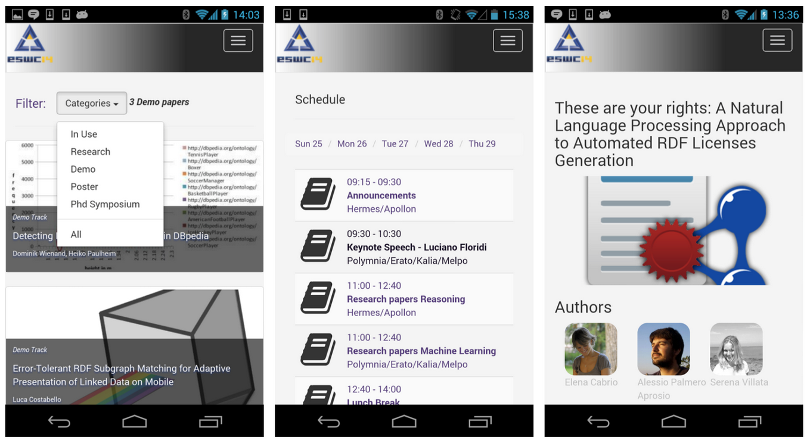

In this paper we describe Conference Live, a semantic Web application to browse conference data. Conference Live is a Web and mobile application based on conference data from the Semantic Web Dog Food server, which provides facilities to browse papers and authors at a specific conference. Available data for the specific conference is enriched with social features (e.g. integrated Twitter accounts of paper authors), scheduling features (calendar information are attached for paper presentations and social events), the possibility to check and add feedback to each paper and to vote for papers, if the conference includes sessions where participants can vote, as it is popular e.g. for poster sessions. As use case we report on the usage of the application at the Extended Semantic Web Conference (ESWC) in May 2014.
A spread good practise in the semantic Web community is eating our own dog food
.
The main example is the Semantic Web Dog Food (SWDF),
a corpus that
collects linked data about papers, people, organizations and events related to academic conferences.
Currently, all main semantic Web conferences and related events publish their data as linked data on SWDF.
Another spread practise in our community (and beyond it) is to share experiences, opinions, materials
on social networks.
We developed a semantic Web application named Conference Live (a work in its early stage), which combines these practises. It is deployed as a mobile as well as Web application, and exploits SWDF data for providing conference attendees with an enhanced experience, by integrating social network and crowdsourcing functionalities.
The main advantages of Conference Live are:
it works with SWDF Linked Data;
it integrates social features: each paper has its own twitter widget, which displays its specific stream of tweets, and allows to publish tweets (by adding the paper hashtag as built-in function);
it allows conference attendees to vote for the best contribution in each track with a one vote per person
policy,
helping the conference organizers to collect, count and rank votes with a simple query;
it provides a feedback system: conference attendees can express their opinion on a specific conference contribution, e.g. a paper presentation, by means of natural language text;
it acts as crowdsourcing system for semantic Web resource creation: the feedback system allows to build a validated terminology for training and tuning sentiment analysis systems performing on opinions expressed on scientific publications and presentation events. One of the contributions of this paper is a terminology associated with validated sentiment polarity.
In this paper, we report about a use case based on the usage of Conference Live during the 11th Extended Semantic Web Conference, ESWC 2014, held in Crete in May 2014. After comparing Conference Live with other existing products (cf. ), we describe the methodology we followed for modeling, collecting, and cleaning the conference data (cf. ). presents Conference Live functionalities, including details on the feedback system. Results of the ESWC 2014 use case are reported in , while we report lessons learnt in .
The first considerable effort to offer comprehensive semantic descriptions of conference events is represented by the metadata projects at ESWC 2006 and ISWC 2006 conferences , with the Semantic Web Conference (SWC) Ontology being the vocabulary of choice to represent such data.
Several applications have been proposed in the years to explore and interact with such data, to offer a semantically enhanced experience during conferences. Livecon app provides a web interface to any SWDF dataset, by supporting the import of conference datasets in the SWC vocabulary. It also helps managing the conference schedule using a Google calendar-like interface. EventMedia is a system to gather, reconcile and organize event-centric knowledge, which is interlinked and published following the best practices of the Semantic Web community. The system itself is not specifically tailored for scientific conferences, but suitable for handling events in general, while one of its components, Confomaton , has been specifically tested in the conference scenario. Confomaton reconciles available social media with specific events. It starts from available metadata about the conference (e.g. from SWDF). Its main goal is (i) to identify all events in the metadata and (ii) automatically align social data potentially referring to such events, gathered from various social platforms. The Conference Explorer is a Web application to browse semantic meta data about a conference. It offers visual and statistical tools for data exploration and complements the initial SWDF dataset with external data sources, such as information gathered from social networks. One of the novelties of our proposed approach is that, besides browsing capabilities over available data, we provide social features and dynamic gathering of feedback and social interaction during the conference. With respect to EventMedia and Conference Explorer, that also consider the social aspect, we introduce the usage of paper specific hashtags to provide explicit, real-time integration with social media (as opposed to automatic post-process data reconciliation) and facilitate accurate live retrieval of social interactions about specific papers. Another main novelty of our system is the introduction of an integrated voting system.
As for commercial solutions there are numerous existing customizable products, with a varying number of included features from scheduling to social network integration, venue mapping etc. Some examples are: Sched , EventBoard , Eventmobi , Whova , Quickmobile , the guidebook event app , the doubledutch event app and many others. Data for these applications must be provided in the required format or in some cases populated by the conference organizer, with the usage of an administration interface. The drawbacks of these commercial tools are that (i) they are not free, (ii) customization is needed to work with SWDF data and (iii) conference specific requirements (e.g. voting) must be built ad-hoc. Conference Live addresses these gaps by providing a solution which (i) works with SWDF data, (ii) provides several features comparable with commercial solutions, (iii) introduces feedback facilities and a voting system, which is typically required for certain tracks of various conferences.
The collection of conference metadata is a task which has been promoted in the years in the Semantic Web community . Data collected from different unstructured and semi-structured resource and must be expressed with appropriate vocabularies to be exposed as linked data. We follow recommendations in and introduce a few novelties in data representation (cf. ) and collection process (cf. ) to enrich conference metadata and provide novel features. The novelties added to the data follow a requirement analysis phase for the design of Conference Live (described in ).
The Semantic Web Conference ontology is one of the vocabularies of choice to describe academic conferences. The SWC ontology extends and combines existing widely accepted vocabularies (i.e. FOAF , SIOC , Dublin Core ) to provide a reference model to describe typical actors in an academic conference, such as accepted papers, authors, their affiliations, organizing committee and all other roles involved.
Choosing the SWC ontology as reference vocabulary makes sure that (i) data is homogeneous with the SWDF corpus and (ii) an application using such data can be easily initialized with data about any of the conferences available in the corpus. Nevertheless, we decided to extend the SWC ontology with additional concepts, properties and axioms in order to address the set of requirements for data modelling and exploitation that we collected at design time. These requirements are identified by the following list:
R1 - External feedback: the system must associate a hashtag to each conference paper. A hashtag can be used to uniquely refer to a paper in the Social Web (e.g. Twitter). Within the system the hashtag is used to retrieve external feedback on the paper from the social Web;
R2 - Internal feedback: the system must provide a mechanism for collecting feedback about a paper from users. Additionally the system should be able to detect and store the sentiment behind a feedback;
R3 - Voting system: the system must provide a voting mechanism for determining the best paper in a certain conference track. Each user can vote only once for each track in which the voting mechanism is enabled;
R4 - Scheduling: the system must provide to the users the conference calendar with the scheduling of events (either social or academic) and paper presentations;
R5 - Browsing: the system must provide a mechanism to browse papers and authors at the conference. Collected metadata is accessible to the end user, including basic information (author names, affiliations, paper titles...), roles covered by each person at the conference; optional data include: author picture, author additional contacts (e.g. social media account), thumbnail for each paper.
Starting from the SWC ontology, we introduced additional properties to address R1-R5.
The datatype property eswc:hashtag
with domain foaf:Document and range xsd:string captures any hashtag used to identify a given paper in social networks.
User feedback is represented as an individual of the class sioc:Post, is associated to a paper
(i.e. instance of the class swc:InProceedings)
and has a recognized sentiment (i.e. instance of the class kdo:Sentiment).
The associations between paper, feedback and sentiment are represented through the properties eswc:hasArtefactAsTopic and kdo:hasSenqtuiemreynthe respectively.
A sentiment has two components: (i) a polarity, expressed via the property kdo:hasPolarity, which can be either kdo:positivePolarity, kdo:negativePolarity or
kdo:neutralPolarity, and (ii) a polarity score,
expressed via the property kdo:hasScore, defined as an integer number.
To capture user votes, we introduced the property eswc:votes for individual of the class foaf:Person,
holding a voter role (eswc:voter).
Social media accounts are captured with the property foaf:account to individuals of the class foaf:OnlineAccount.
We associated depictions and images to people and proceeding articles, reusing the properties foaf:depiction and
dbpedia-owl:thumbnail respectively.
As use case for the rest of this paper we use the ESWC 2014 conference.
The initial set of data is collected with a script transformation
of XML data obtained through the easychair conference management system .
The resulting RDF graph eswcMainGraph,
expressed with the SWC vocabulary, contains information about papers accepted to the main conference track and the in-use conference track;
eswcMainGraph does not contain data of conference related events (e.g. challenges, posters, demos and workshops).
We contacted all event organizers and collected CSV data from them, containing basic information about all accepted papers;
using an ad-hoc script we transformed this data in a rdf graph eswcRelatedGraph, in the same format of eswcMainGraph.
Both eswcMainGraph and eswcRelatedGraph do not contain data to fulfil requirements R1-R6.
We therefore complemented this information.
First, we submitted on-line forms
to all paper authors to collect their photos and
twitter accounts, giving them the chance to amend any incorrect information (e.g. name misspelling) and to provide a thumbnail for their paper.
All collected data has been integrated in the existing graphs, which are collated in a single eswcGraph.
Each person in the graph is identified by a URI, in the form http://data.semanticweb.org/person/<firstname>-<surname>.
The convention to generate a URI for a person is to use http://data.semanticweb.org/person as prefix
and concatenate any fistname, middle names and surnames spared by the dash character.
This procedure should make sure that if a person is already present in the SWDF corpus,
the same URI is reused.
In practise this is not the case, especially for people with multiple names and surnames, which sometime are reported inconsistently in different papers.
Therefore we performed a simple automatic cleaning procedure. For each person URI, we query the SWDF corpus and check if it exists already.
If not, we query for all possible alternative options (e.g. with a URI that does not use the middle name of a person).
If options are found, these are manually checked to confirm identity and the existing URI is reused in eswcGraph.
In the case that no option is found, the new generated URI is adopted.
Specifically, when generating metadata about the main track, we initially generated 478 URIs for people. Of those, 82 were not present on SWDF.
We identified 19 of them with potential alternatives, by automatically selecting all people with multiple names or surnames and we check if any of those exists.
If found, the alternative existing URIs are manually checked.
As an example, the proposed URI for Maribel Acosta Deibe is http://data.semanticweb.org/person/maribel-acosta-deibe.
By checking all combinations (removing multiple names and surnames one at the time, in this case, the only option is to remove the second surname)
we find an existing URI http://data.semanticweb.org/person/maribel-acosta,
which is manually checked and chosen as the one to use.
In four of the 19 cases we replaced the URI.
This procedure does not exclude the case when people who previously used multiple names, only used their first name for example in the current conference.
As future work, a search-like function over different Web sources can be introduced to address these cases.
To fulfill R4 we collected csv data about presentation schedule from all event organizers.
This data has been converted with a transformation script in an rdf graph, eswcCalendar, using the ical vocabulary .
The integration of eswcCalendar with eswcGraph is done by matching paper titles and representing the relation between a paper and its presentation event with the two inverse properties eswc:isPresented
and eswc:presents.
As lesson learned, the csv solution to collect calendars is not the easiest to handle, as it is prone
to mistakes by the data providers which have to then be manually checked and solved for the scripts to function.
A better solution can be demanding the creation of calendars to data providers or using more structured tools to collect the data (as e.g. the forms that we used for papers and authors information, where
type checking can be enabled at input time). In the same guise, the final responsibility on data cleaning could be partially demanded to users themselves,
by implementing a user feedback mechanism where the user can notify and suggest changes (on all created metadata).
The Conference Live mobile application has been designed to support conference attendees during the ongoing event. The system is designed following the model-view-presenter approach (MVP) .
The data (described in ) is stored in two different triple stores, a static store that contains data collected and loaded
before the conference, and a dynamic store, which includes data collected during the conference via the front-end application (cf. ),
mainly user feedback and votes.
Each feedback is complemented with a sentiment (a polarity connotation with a confidence score), which is automatically calculated through the
Sentiment Analysis Module (cf. ) and can be manually corrected by the end user.
Votes are associated to each eligible publication (as indicated by conference organizers) and the system can implement multiple independent
votes collection, for example divided by track (e.g. poster track and demo track).
This is decided beforehand by the conference organizers.
Users can vote only once, for each track.
To cast a vote, users are given a unique one-time secret code, to assure the one vote per person
policy.
The static store is accessible through a REST API .
The dynamic store is only internally accessible for privacy issues.
Additionally, the system incorporates external feedback on each paper from the Twitter social network. This data is not stored internally, but retrieved by using the Twitter API.

The mobile application implements functionalities to address the requirements R1-R5 (cf. ).
Browsing. First, the application offers basic browsing capabilities (R5), through publications metadata. Accepted papers can be filtered by conference track (as shown in ). If desired, papers can be visualized in a calendar-like view (R4) of the conference (cf. ). A detailed view of each publication is also provided. Beside abstract, track, authors, and other publication metadata, such view offers access to additional features: the voting system (R3), the social network widget (R1), and the feedback system (R2).
Voting.
The voting system is used to gather votes from the attendees with the one vote per person
policy and data is sent to the dynamic store.
Social network widget. The social network widget contains the list of public tweets associated to each paper (the association is done using an ad-hoc hashtag, pre-loaded in the Twitter timeline). Embedded Twitter timelines provide the capacity of displaying a collection of Tweets in an application or Website with minimal coding effort. In addition, users can interact with the widget by posting Tweets that are automatically annotated with the widget information. There are different mechanisms to specify the timeline source of a certain widget, e.g. showing all the Tweets from: a given user, a user's favourites, search and hashtags, etc. The Conference Live application used the option of creating a timeline from each hashtag associated to a paper. The version of the Twitter API (V1.1) used at the moment of implementing the application, did not support the functionality of automatic creation of Twitter search widgets, therefore each widget was created and customized manually. Since this might become a scalability issue when dealing with large number of publications, embedded Twitter timelines can be replaced with self-developed widgets using the Twitter REST API. However, this solution requires additional efforts to deal with data refreshens, pagination and supporting user interactive features.
Feedback system. One of the novel features of Conference Live compared to other existing conference applications is the feedback system. It is used to collect feedback about each paper, expressed as natural language text. The text is processed by the Sentiment Analysis Module (cf. ) and data is sent to the dynamic store. The idea of the feedback system is to crowdsource a validated terminology (and its associated sentiment polarity) by relying on the conference attendees who have the incentive of contributing to award-decision procedures on conference papers (cf. ).
Implementation details. The Conference Live mobile application consists in a cross-platform web application optimized for handheld devices. It is developed in JavaScript, and it is based on the Backbone.js JavaScript MVP approach. The front-end adopts the Bootstrap framework and the Underscore.js templating engine. The adoption of Bootstrap eased the design and development of a responsive web application, a crucial factor in targeting mobile devices.
The web application has been packaged as cross-platform, native mobile applications using the Apache Cordova framework . The adoption of Cordova let us re-use the same web-based codebase to ship Android and iOS mobile applications. Hence, we targeted three different distribution platforms: a web-based application served by a regular web server , the Google Play store , and the iTunes app store.
The Sentiment Analysis Module (SAM) has been developed in Python and deployed as a REST service. Its implementation is inspired by and adapted to Conference Live requirements. SAM relies on two lexical resources: SenticNet and SentiWordNet . SenticNet associates a sentiment value to each word, in the interval range [-1,+1], where -1 connotes an extremely negative sentiment, whereas +1 an extremely positive one. SentiWordNet associates three scores to each word: a positive_score, a negative_score and an objective_score. The three scores sum up to 1, and any of the three can be 0.
Given a natural language text t as input, the SAM module returns a polarity score, i.e. polarityScore(t), for the overall text. After some pre-processing, e.g. tokenization, it transforms the text to a list of words w1,..., wn. For each wi, SAM computes (i) one score from SenticNet, i.e. snScore(wi), (ii) one score from SentiWordNet, i.e. swnScore(wi), and (iii) calculates a final score, i.e. polarityScore(wi), as the average of them :
and finally (iv) it computes polarityScore(t) as the average value of all polarityScore(wi).
SAM also considers negations: it implements some heuristics for changing the sign of a score depending on the negation position within a sentence.
When neither SenticNet or SentiWordNet allow computing a sentiment score for a word, SAM returns a code indicating no result
for that word.
Full details about SAM can be found in .
The first experience of Conference Live in use was ESWC 2014, held in Crete, with around three hundred participants. The app could (and can) be downloaded and installed either from Google Playstore or Apple Store, or used online as web application . During the conference, Conference Live was downloaded 79 times from the Google Playstore, and 54 times from the Apple Store.
Thanks to the dedicated hashtags, we collected all tweets about conference papers and grouped them by paper. In total, there have been 172 paper-specific tweets . Each tweet is associated with a polarity value, which is computed by using the approach described in . We noticed that many tweets came from paper authors who wanted to advertise their own work and presentation for attracting votes and attendees. This simple behavioral observation suggests more sophisticated ways of computing sentiment scores on tweets that are specific for authored works, during an event including their presentation. For example by matching the identity of a tweet author with the identity of the paper authors (when their twitter accounts are provided), possible ad-hoc strategies can be performed.
Another way of better evaluating the sentiment polarity of opinions expressed on scientific papers and related events is to identify the most used terms and their sentiment attitude, in this specific domain. This is one of the aims of the feedback system (cf. ): crowdsourcing a specific validated terminology of sentiment expressions on scientific conference publications and presentations. During ESWC 2014, we collected 102 feedback corresponding to 76 distinct terms and expressions from the conference crowd. In future uses of Conference Live, this terminology will be extended and further validated. A longer-term goal is to build a validated terminology for the domain of scientific publication/presentation feedback, which can be used for tuning sentiment analysis systems on this specific context. The current validated terminology with its associated polarity is publicly accessible online .
In addition to the above, Conference Live allowed us to extract some interesting statistics on the ESWC 2014 event, we identified:
the most used terms for expressing a positive feedback on paper presentations, i.e. cool
, as well as the most used one for expressing a negative feedback, i.e. boring
;
the most tweeted papers; the papers with most positive feedback, etc.
Finally, through the voting system, the organizing committee was able to identify the best poster and the best demonstration relying on a cheating-free mechanism of voting
(as opposed to the usual paper-in-the-box
procedure).
With such procedure, it is also possible to prevent authors of a paper to vote for themselves, if the organizing committee requires so.
From the ESWC 2014 use case, we learned that there is interest and willingness to contribute from the conference crowd (which is important as for incentive aspects), at least in the Semantic Web domain. Although Conference Live was used less than the potential offered by the conference (79 downloads from the Google Playstore and 54 from the Apple Store), it met our expectations as we have used ESWC 2014 as a test-bed for the app. We received a significant number of useful feedback on usability improvements and possible new desirable functionalities, which proved the general interest of conference attendees on such a service. Also, the app usage was spread enough, in fact the collected data provided us with enough insights for drawing useful statistics, and planning improvements to the app services.
In this paper we described a novel application, named Conference Live, which provides conference attendees with an enhanced event experience. Conference Live was built with the semantic Web community case in mind, but can be easily adapted to other contexts.
Using Conference Live during the last ESWC conference, allowed us to identify a number of weak points on the whole methodology as well as to receive several useful suggestions on how to improve the app for future development, e.g. integrating other useful conference information, such as conference venue map, travel information, links to slides, links to conference proceedings and adding additional features such as keyword and author search.
As far as the methodology is concerned, we identified some missing components in the Semantic Web Conference ontology. However, the most significant issue was collecting and cleaning data. A good practise is to integrate data collection in the conference organization procedure as early as possible. In our case, as the app was being developed during the conference organization, we realized certain requirements only late in the process, which caused additional effort for reaching all stakeholders. We are planning to use the app also during next WWW conference and next ESWC event, hence we will have the chance to improve the methodology in this respect by cooperating with the conference organizers much earlier.
Cleaning data is a simple but time-consuming activity. A possible way to reduce the effort is to distribute it to the crowd during data collection. Once potential expressions referencing the same entity are identified, i.e. different spelled names for a same person, the crowd can fix such expressions by indicating whether they can be merged or not.
As for the social features, we need to identify a scalable solution for the automatic creation of twitter search widgets, which were built and customized manually.
Finally, it is important to ensure wide adoption during a conference in order to guarantee that final results are significant and interesting enough to the community and the conference organizers. In this first experience, we started advertising the app only at conference time, and also experienced some bug-fixing situations during the pre-conference days. We believe that this had an impact on the potential adoption of the app, although it was acceptable considering that the app was just born. Still, we managed to collect useful data, which confirms the high potential of Conference Live adoption in its future versions and use cases.
W. Harrison, Eating your own dog food. IEEE Software 23(3):5-7, 2006
K. Möller, T. Heath, S. Handschuh, J. Domingue. Recipes for Semantic Web Dog Food: The ESWC and ISWC Metadata Projects. In Proceedings of ISWC'07/ASWC'07, pages 802-815. Berlin, Germany, 2007. Springer-Verlag.
K. Möller, S. Bechofer, and T. Heath. Semantic web conference ontology. Retrievable on line at http://data.semanticweb.org/ns/swc/swc_2009-05-09.html, 2009.
L. Médini, F. Bâcle, and H. D. T. Nguyen. Dataconf: Enriching conference publications with a mobile mashup application. In Proceedings of WWW 2013, Companion Volume, pages 477–478, 2013.
H. Khrouf and R. Troncy. Eventmedia: A lod dataset of events illustrated with media. Semantic Web journal, Special Issue on Linked Dataset descriptions, pages 1570–0844, 2012.
H. Khrouf, G. Atemezing, T. Steiner, G. Rizzo, and R. Troncy. Confomaton: A conference enhancer with social media from the cloud. In Proceedings of ESWC 2012. Berlin, Germany, 2007. Springer-Verlag.
D. Brickley and L. Miller. FOAF Vocabulary Specification. Technical report, FOAF project, May 2007. Published online on May 24th, 2007 at http://xmlns.com/foaf/spec/20070524.html.
D. Berrueta, D. Brickley, S. Decker, S. Fernández, C. Görn, A. Harth, T. Heath, K. Idehen, K. Kjernsmo, A. Miles, A. Passant, A. Polleres, L. Polo, and M. Sintek. SIOC Core Ontology Specification. W3c member submission, W3C, June 2007.
D. Beckett, E. Miller, and D. Brickey. Expressing simple dublin core in rdf/xml. retrievable on line at http://dublincore.org/documents/dcmes-xml/, 2002.
M. Potel. MVP: Model-View-Presenter the taligent programming model for C++ and Java. Taligent Inc, 1996.
A. Gangemi, V. Presutti, and D. R. Recupero. Frame-based detection of opinion holders and topics: A model and a tool. IEEE Comp. Int. Mag., 9(1):20–30, 2014.
E. Cambria, C. Havasi, and A. Hussain. Senticnet 2: A semantic and affective resource for opinion mining and sentiment analysis. In FLAIRS Conference, 2012.
S. Baccianella, A. Esuli, and F. Sebastiani. Sentiwordnet 3.0: An enhanced lexical resource for sentiment analysis and opinion mining. In Proc. of LREC’10, Valletta, Malta, may 2010. ELRA.
Prefixes used hereafter are:
The ontology is available at http://ontologydesignpatterns.org/ont/eswc/ontology.owl
Example of form: http://wit.istc.cnr.it/conference-live/data
If one of them is zero, we keep the other one.
http://staffwww.dcs.shef.ac.uk/people/A.L.Gentile/demo/twitter.html